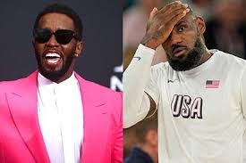
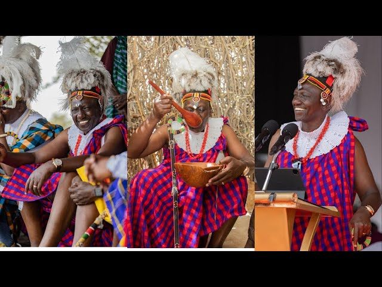

ENTERTAINMENT
LEBRON JAMES ON DIDDY'S ARRESTATION
NBA star LeBron James stated that he prefers not to comment on Sean "Diddy" Combs' "freak-off" parties in light of the sex-trafficking charges against Combs until James knows "how much information becomes public knowledge."
A rumor circulating online suggests that in late September 2024, LeBron James made a statement regarding the sex-trafficking charges against Sean "Diddy" Combs, saying, "I prefer not to speak on this matter until I know how much information becomes public knowledge." For instance, @WallStreetSilv, a user on X with over 1.4 million followers, shared (archived) a meme featuring a photo of James answering reporters' questions alongside another photo of James posing with Combs. The meme referenced "the fine print," which indicated that James’ comment was in response to a reporter asking how many of Diddy’s "freak-off" parties he had attended. The post garnered over 3 million views. The meme also appeared in a widely viewed TikTok video with over 1.4 million views and was further shared on platforms like americasbestpics.com, ifunny.co, and another TikTok video. Several top comments under the initial TikTok video appeared to believe the quote was real. One notable comment, with almost 40,000 likes, said, "That's the most guilty comment I've ever seen outside of a confession." However, after conducting an online search, no evidence was found of James making the statement in the meme as per the outlet. No sports news outlets, large or small, reported on the quote, and no videos surfaced showing James making such remarks. As of now, it remains unclear who originated this rumor.
Furthermore, regarding the two images used in the meme, the Getty Images website shows that photographer Christopher Polk captured the photo of James and Combs together at the ESPY awards on July 17, 2013. The image of James answering reporters' questions was taken by photographer Ethan Miller in Las Vegas on October 5, 2022.
TURKANA: PREPARATIONS FOR TOBONGULOREE FESTIVAL IN TOP GEAR
 The President Ruto at TobonguloreeAt least forty choirs have been selected for the upcoming 8th edition of the Tobonguloree festival, which is set to take place at Ekaales Centre in Lodwar, Turkana County. The festival, a key cultural event in Turkana County, celebrates traditional music, dance, and local heritage, drawing participants from across the Ateker region. The Tobonguloree festival will be held from 24th through 27th October 2024.
 Forty choirs have been selected to perform at the upcoming 8th edition of the Tobong’u Loree Tourism and Cultural Festival. Photo: KNA
Forty choirs have been selected to perform at the upcoming 8th edition of the Tobong’u Loree Tourism and Cultural Festival. Photo: KNA
The Tobonguloree festival will be held from 24th through 27th October 2024. Following a comprehensive audition process held in each of the county’s thirty wards, Lemmy Ejorowoia, coordinator of the audition exercise, said chosen choirs will present cultural songs and dances in the “Edong’a” and “Naleyo” categories. “The auditions were conducted with the aim of ensuring high-quality performances during the festival. These performances will complement other highlights, such as the beauty contest, sports events, and official speeches,” Ejorewoia said. He emphasised on the significance of continuous practice for the selected groups, encouraging them to enhance their performances before the festival. “We expect the groups to keep rehearsing to deliver memorable performances that showcase our rich cultural heritage,” he said. Director of Tourism, Abdul Lomuria said three audition teams were dispatched across Turkana to provide equal opportunities for all aspiring performers. “Our goal was to ensure every interested choir had the chance to audition, highlighting the diversity of our county’s cultural expressions,” Lomuria said. Traditional songs and dances are central to the Tobong’u Loree Festival, featuring prominently as opening acts, interludes, and closing performances. The festival’s cultural showcases resonate deeply with attendees, particularly the Ateker cluster communities, who view these traditions as vital elements of their heritage. As the festival approaches, anticipation is building among cultural enthusiasts and locals alike, who look forward to an event filled with vibrant music, dynamic dances, and a celebration of unity and cultural pride.